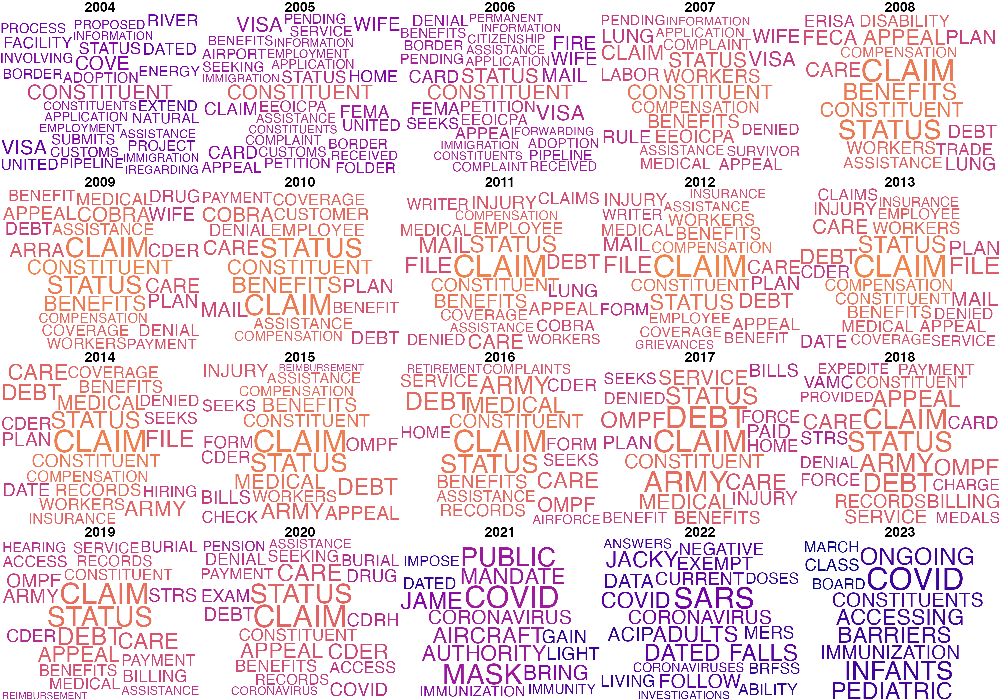
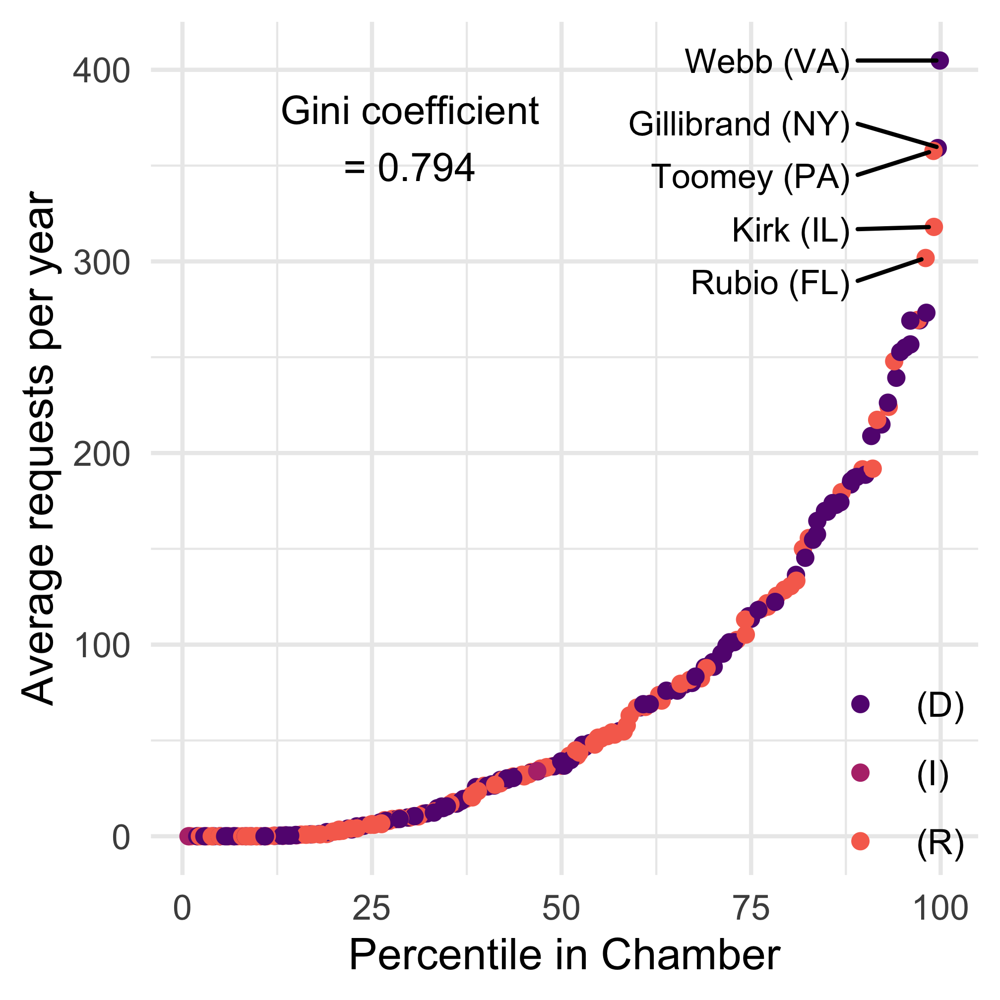
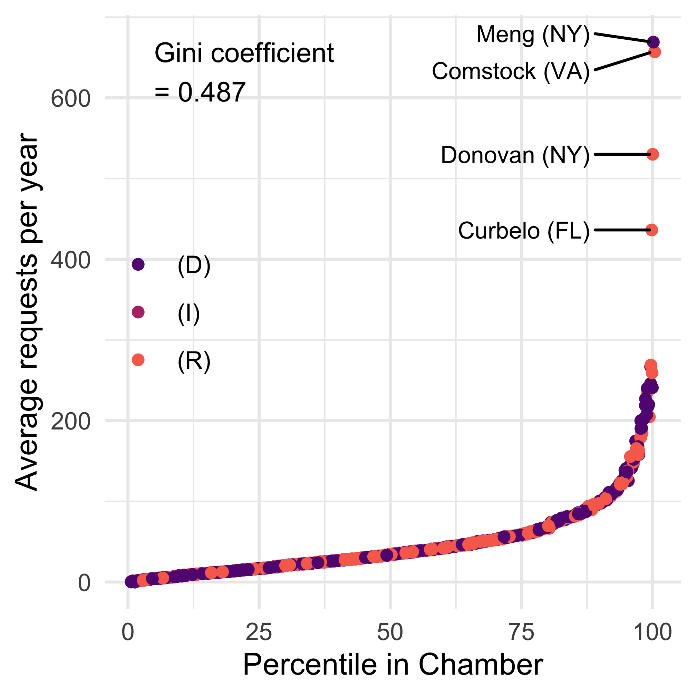
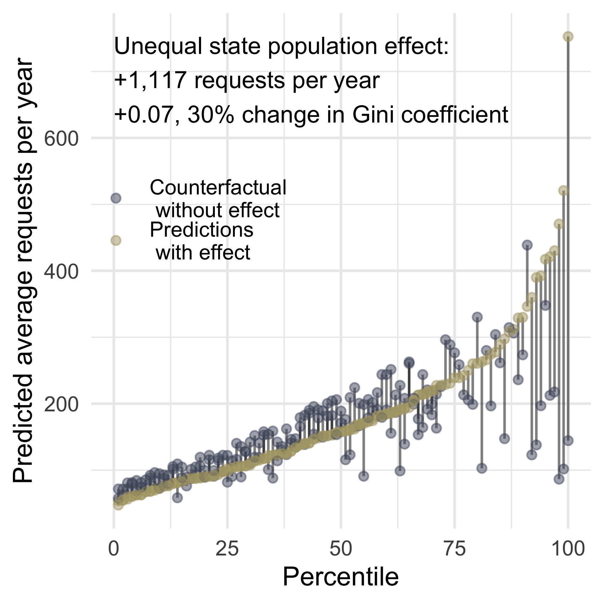
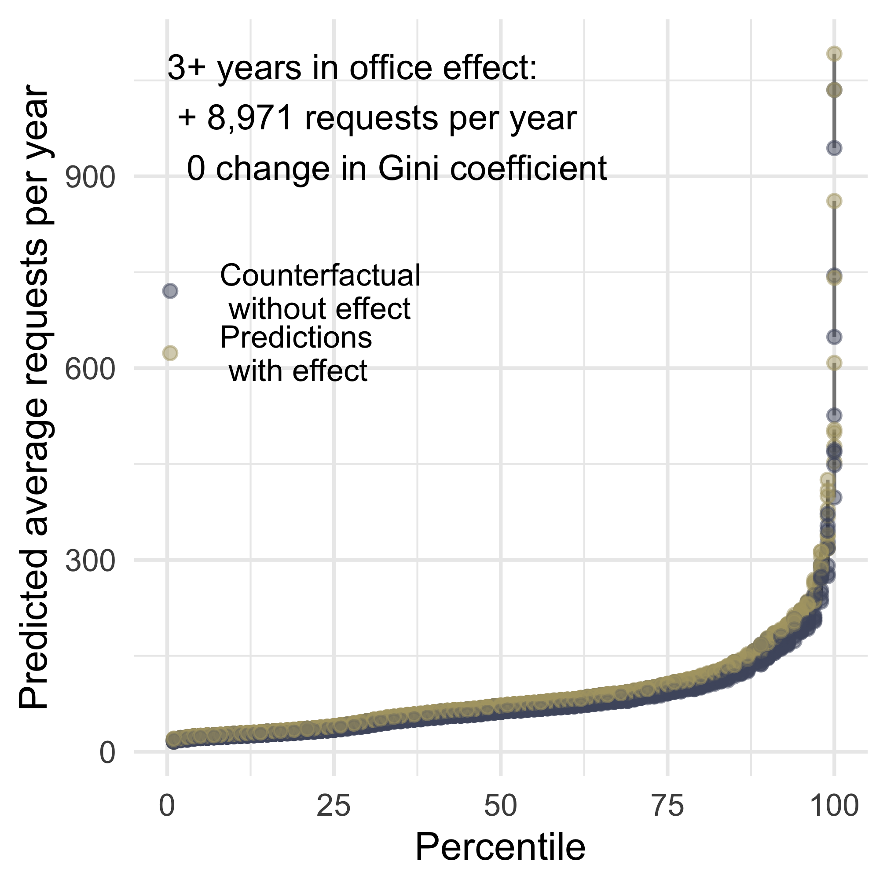
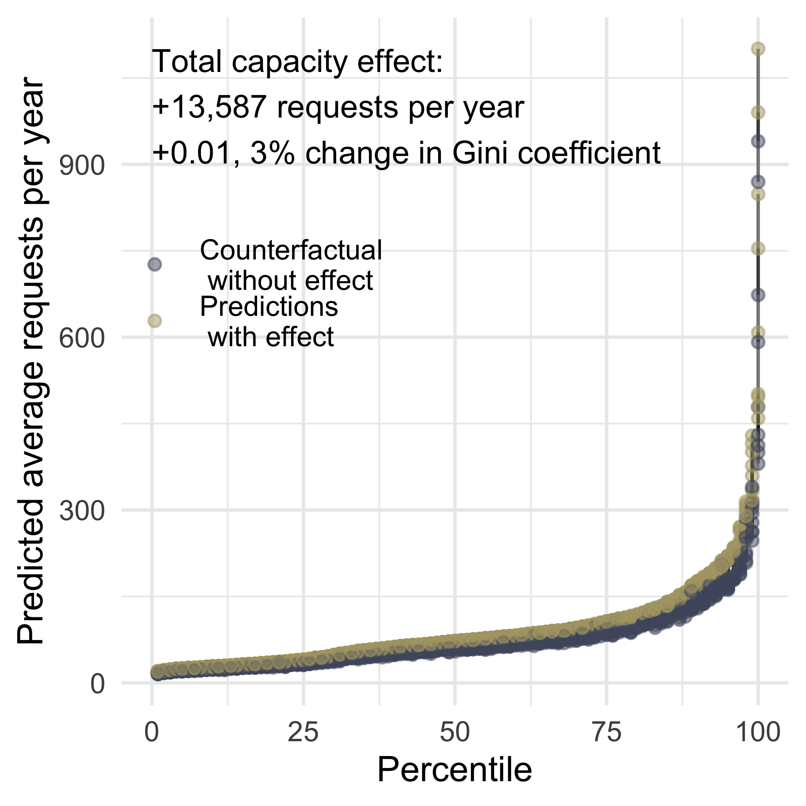

5 Representing Individual Constituents
ABSTRACT: We examine what explains the unequal levels of constituency service that legislators provide to individuals in their district. Folk theory explanations about district demand and, especially, legislator capacity explain a large share of the variation. We find that legislators’ experience in office is the primary driver of constituency service work. However, constituency service is not entirely free of partisan and ideological influences. While reelection does not seem to motivate constituency service, ideologically moderate members do perform more of this work. Overall, our analysis suggests that demand and capacity matter most for individual constituency service, with strategy appearing important in small but surprising ways.
An individual complaint or request for a favor may itself be trivial, except to the aggrieved or hopeful citizen and his family. Responding to it may tax the energy and ingenuity of an overworked member of Congress and his staff. No single request left unheeded is likely to rock the Republic. But the provision of millions of such minuscule services, in their totality, amounts to a major function of modern American government. How well these services are performed goes a long way in determining the confidence of citizens in their representatives.
— Olson (1966), pg. 338.
Olson’s quote about constituency service speaks to the importance of constituency service for the individuals it helps. Constituency service is also important for members of Congress in a number of ways, including as a major component of interbranch representation. In this chapter, we describe what individual constituency service looks like from this perspective and assess what explains inequalities in this activity across legislators. We find that various elements of demand, capacity, and strategic responses to the political environment matter for individual constituency service. Most notably, legislators with more experience and with more constituents, as well as legislators who are more ideologically moderate, do more of this work.
5.1 What is individual constituency service?
Legislators perform a variety of tasks to help and serve individual constituents (Blackwood 2026), and the difference between a constituent request for assistance and a constituent communication about policy is not always clear (Snyder 2024). Because we are concerned with how legislators engage with federal agencies on behalf of constituents, we use a definition of individual constituency service that is distinct from definitions used in other studies. We conceptualize individual constituency service as actions that congressional offices have taken on behalf of individual constituents, including groups of individuals and large numbers of people,1 to help them navigate the federal bureaucracy. As the post from Rep. Colin Allred in Figure 5.1 shows, this assistance often involves returning money to constituents from the federal government by correcting errors in benefits payments or tax refunds. Legislators also view individual constituency service as important enough to warrant regular communications and significant staff budgets.

Given the large number of policy areas in which the federal bureaucracy is involved, constituency service on behalf of individuals involves legislators’ contacting a number of different agencies for a vast array of purposes. Many of the most common will be familiar to scholars of congressional representation and constituency service. As evidenced by the word cloud in Figure 5.2, our data include a significant number of contacts between legislators and the Department of Veterans Affairs (VA) to ask about the status of claims that their veteran constituents had filed with the VA. Other common subjects of requests to the VA on behalf of individual constituents involved appeals, disability ratings, and changes in benefits. Interestingly, a fair number of VA letters were identified as follow-up requests, indicating that legislators’ casework staff were repeatedly contacting the VA about the same constituent case. Determining whether this pattern speaks more to a particular unresponsiveness of the VA or exceptional persistence on the part of congressional staff (or exceptionally detailed record-keeping by the VA) is beyond the scope of our analysis, but it does accord with our theoretical expectation about the importance of capacity for interbranch representation.
Similar communications appeared in the congressional correspondence logs from many sub-agencies in the Department of Labor (DOL). Several different DOL sub-agencies, including the Occupational Safety and Health Administration (OSHA), the Office of Workers’ Compensation Programs (OWCP), and the Office of Congressional and Intergovernmental Affairs (OCIA), handled congressional requests involving on-the-job injuries, benefits claims, and workplace safety complaints. Also unsurprising is the number of communications with the Internal Revenue Service (IRS) in the Treasury Department on behalf of constituents dealing with issues involving their taxes, especially tax refunds. Hundreds of thousands of individual constituency service requests involve immigration issues with U.S. Citizenship and Immigration Services (USCIS) within the Department of Homeland Security.
Beyond these “classic” examples of individual constituency service, there are also many examples of correspondence on behalf of individuals that did not involve a problem with the federal bureaucracy (at least not in the sense that the bureaucracy had made an error or the constituent had experienced some injustice). The National Archives and Records Administration (NARA) received thousands of requests from legislators on behalf of constituents who were seeking copies of their family members’ military records. Many legislators also forwarded constituent complaints and queries to the Food and Drug Administration (FDA) within the Department of Health and Human Services. Although these concerns were broadly related to the policy work of the FDA, they often did not suggest a specific bureaucratic failure on the part of the agency. For example, Senator Arlen Specter wrote to the FDA with a request to investigate the treatment that a constituent received at a VA hospital. The constituent had an adverse reaction to a drug that included joint pain, memory loss, sleep apnea, vision loss, and stomach difficulties. The symptoms abated after the patient stopped taking the drug, at the behest of the VA physician. At issue in this case was the drug, not the VA, as the physician seemed to recognize and respond to the problem. And although the FDA had the ability to investigate the issue, the constituent was not contacting Specter about a particular bureaucratic issue with the FDA. This example illustrates how problems can sometimes appear for constituents at the intersection of several agencies, which suggests that the expertise and capacity of legislators’ offices matters for addressing these issues. Congressional staff need to have some sense of how contacting an agency may help to address a problem in a way that is appropriate for the constituent, and these ambiguous cases likely require deep knowledge of the federal bureaucracy.
5.2 Explaining Differences in Constituency Service


We now turn to explaining the significant inequalities in constituency service that exist across legislators. Figure 8.11 shows extreme levels of inequality in individual constituency service across members in both the Senate (left) and the House (right), with a few offices of members of the House averaging higher levels of interbranch representation than any Senate office. Interbranch representation on behalf of individuals mirrors income inequality in Brazil (.49 in 2024) for both the House and the Senate. Notable outliers in the House include Representatives Meng, Comstock, Donovan, and Curbelo.2
The models in Table 5.1 use our framework of Demand, Capacity, and Strategic Choice to explain interbranch representation. Models 1, 3, and 5 show the cross-sectional effects, which are our primary focus for now. Across these models, we find that elements of all three parts of our framework explain inequalities in interbranch representation.
| (1) | (2) | (3) | (4) | (5) | (6) | |
|---|---|---|---|---|---|---|
| † p < 0.1, * p < 0.05, ** p < 0.01 | ||||||
| Robust standard errors in parentheses, clustered by legislator. | ||||||
| This table shows estimates of the effect of constituent demand (population, employment, education, public assistance), legislator capacity (chamber, reporting committee, committee chair, subcommittee chair, and ranking member positions and years in office) and institutional positions that may affect strategic behavior (reporting committee membership, perceived ideological distance from the agency, co-partisan president) on levels of interbranch representation. | ||||||
| Dependent variable | Count | Count | Count | Count | Count | Count |
| Constituent Demand | Constituent Demand | Constituent Demand | Constituent Demand | Constituent Demand | Constituent Demand | Constituent Demand |
| Population (Millions) | 0.054** | 0.105** | 1.061* | 0.052** | 0.154* | |
| (0.013) | (0.020) | (0.418) | (0.012) | (0.064) | ||
| % Government Sector | 4.375** | 0.179 | 4.757** | 0.335 | 2.568 | -3.287 |
| (0.666) | (0.988) | (0.678) | (1.065) | (1.937) | (11.039) | |
| % College Grad | 0.472 | -0.074 | 0.401 | -0.241 | 1.633 | 2.875 |
| (0.338) | (0.308) | (0.341) | (0.314) | (1.307) | (5.579) | |
| % Public Assistance | -1.787 | -1.633 | -2.685† | -2.541 | 12.116* | 8.186 |
| (1.493) | (2.038) | (1.481) | (2.167) | (5.436) | (8.148) | |
| Strategic Choices Shaped by Political Environment | Strategic Choices Shaped by Political Environment | Strategic Choices Shaped by Political Environment | Strategic Choices Shaped by Political Environment | Strategic Choices Shaped by Political Environment | Strategic Choices Shaped by Political Environment | Strategic Choices Shaped by Political Environment |
| Competitive General | 0.072† | 0.015 | 0.123* | -0.029 | -0.031 | -0.027 |
| (0.043) | (0.030) | (0.050) | (0.040) | (0.077) | (0.061) | |
| Competitive Primary | -0.026 | 0.156** | ||||
| (0.065) | (0.059) | |||||
| President's Party | 0.047 | 0.035* | 0.062 | 0.026 | 0.017 | 0.017 |
| (0.031) | (0.016) | (0.040) | (0.020) | (0.052) | (0.029) | |
| Republican | 0.237** | 0.263** | 0.091 | |||
| (0.056) | (0.061) | (0.117) | ||||
| Independent | -0.433** | -0.657** | ||||
| (0.113) | (0.166) | |||||
| Ideological Distance | 0.001 | 0.025 | -0.102 | |||
| (0.031) | (0.034) | (0.064) | ||||
| Distance x President's Party | -0.028 | -0.008 | 0.012 | |||
| (0.030) | (0.035) | (0.047) | ||||
| | 1st Dim. DW-NOMINATE | | -0.797** | -0.565** | -1.046** | |||
| (0.175) | (0.197) | (0.348) | ||||
| Capacity | Capacity | Capacity | Capacity | Capacity | Capacity | Capacity |
| Reporting Committee | 0.065* | -0.015 | 0.079* | -0.085 | 0.029 | 0.102 |
| (0.030) | (0.041) | (0.032) | (0.053) | (0.060) | (0.068) | |
| Three+ Years in Office | 0.146** | 0.140** | 0.121** | 0.146** | 0.406** | 0.279** |
| (0.039) | (0.033) | (0.046) | (0.045) | (0.110) | (0.076) | |
| Committee Chair | -0.026 | -0.011 | -0.028 | -0.018 | -0.103 | 0.053 |
| (0.066) | (0.044) | (0.088) | (0.062) | (0.100) | (0.060) | |
| Ranking Member | 0.105 | 0.069 | 0.056 | 0.112† | 0.035 | 0.080 |
| (0.071) | (0.042) | (0.093) | (0.061) | (0.097) | (0.061) | |
| Subcommittee Chair | 0.064† | 0.013 | 0.062 | -0.027 | 0.001 | 0.064 |
| (0.036) | (0.023) | (0.039) | (0.027) | (0.079) | (0.052) | |
| Served in State Leg. | -0.034 | -0.091† | 0.080 | |||
| (0.047) | (0.052) | (0.101) | ||||
| Senate | 0.720** | 0.492** | ||||
| (0.098) | (0.143) | |||||
| Observations | 327,033 | 146,200 | 244,951 | 102,568 | 56,982 | 35,369 |
| Year x agency fixed effects | X | X | X | X | X | X |
| Legislator x agency fixed effects | X | X | X | |||
| All legislators | X | X | ||||
| Only House | X | X | ||||
| Only Senate | X | X | ||||
Demand
As in the models examining overall interbranch representation that we presented in Chapter 4, district population is related to levels of interbranch representation in both the House and the Senate, supporting our expectations in Hypothesis 2.1. We can see the effects of population on inequality in Figure 5.4. This figure compares predicted levels of interbranch representation (as a function of district population) with a counterfactual in which each senator represents an equal number of constituents. While the counterfactual of equal state populations reduces inequality in individual constituency service somewhat, by no means does it suggest equal levels across legislators. To fully explain legislators’ unequal levels of individual constituency service, we must look elsewhere.
Other components of constituent demand have only inconsistent effects across models. Only one operationalization of “more demanding” constituents, the percentage of constituents employed in government, is statistically significant in our models (and only in the cross-sectional model with all legislators and the cross-sectional model using only House members). Thus, we find minimal support for our expectation (Hypothesis 2.2) that legislators with more demanding constituents – those who are more likely to know how to contact their legislator for help – will perform more individual constituency service.
Interestingly, we also find minimal support for our expectation in Hypothesis 2.3 that constituents with a greater need for assistance, operationalized here as the percentage of a legislator’s constituents receiving public assistance, is associated with higher levels of individual constituency service. The coefficients on this variable are negative in both pooled models and both House models. While positive in both Senate models, the coefficient is statistically significant only in the cross-sectional model (Model 5). The fact that this measure of need works in different directions for the House and the Senate is worth exploring in greater depth, particularly because of the nuance it adds to the debate in the literature about the effects of knowledge vs. need on constituents’ contact with their legislators.

Capacity
Columns 1, 3, and 5 of Table 5.1 show differences across legislators with different capacity advantages. Most obvious here is the strong and statistically significant relationship between legislator experience (operationalized as having spent three or more years in office) and individual constituency service. Experience is significant in all six models, though the effect is largest in the Senate. We can see in panel (a) of Figure 5.5 that a counterfactual of equal tenure between legislators has a noticeable effect on levels of constituency service. Interestingly, our other measure of legislator experience, having served in a state legislature, does not accord with our expectations about experience; it appears that experience in another legislative institution has no bearing on the amount of individual constituency service that legislators perform. Overall, then, we find support for Hypothesis 2.5.
Other indicators of capacity, however, provide no support for our hypotheses. Contrary to our expectations in Hypothesis 2.6, there is no evidence that committee chairs do more individual constituency service. The effect of being a ranking member of a committee is statistically significant only in the pooled and House difference-in-difference models (Models 2 and 4). Holding a subcommittee chair position is not associated with individual constituency service either. While we find some evidence to support our expectations in Hypothesis 2.7 that legislators who sit on the reporting committees for an agency will write more letters to that agency, these effects are statistically significant only in the pooled and House cross-sectional models. The predicted differences between higher and lower capacity legislators in panel (b) of Figure 5.5 are almost entirely driven by experience in office.


Staff quality
| (1) | (2) | (3) | (4) | (5) | (6) | |
|---|---|---|---|---|---|---|
| † p < 0.1, * p < 0.05, ** p < 0.01 | ||||||
| Robust standard errors in parentheses, clustered by district | ||||||
| This table shows estimates of the effect of electing a new member of the same or different party on levels of interbranch representation. | ||||||
| Dependent variable | Count | Count | Count | Count | Count | Count |
| New Member | -0.046 | -0.104** | -0.083 | -0.115* | -0.476** | -0.086 |
| (0.039) | (0.025) | (0.064) | (0.052) | (0.113) | (0.054) | |
| New Member x Same Party | 0.053 | -0.001 | 0.103 | -0.023 | ||
| (0.086) | (0.063) | (0.147) | (0.063) | |||
| Same Party | -0.191* | 0.003 | -0.277* | -0.009 | ||
| (0.084) | (0.062) | (0.128) | (0.064) | |||
| Competitive General | 0.505** | -0.012 | ||||
| (0.126) | (0.039) | |||||
| President's Party | -0.002 | 0.006 | ||||
| (0.054) | (0.045) | |||||
| Republican | 0.078 | -0.041 | ||||
| (0.130) | (0.064) | |||||
| Independent | -0.314 | -0.385** | ||||
| (0.207) | (0.098) | |||||
| Ideological Distance | -0.037 | -0.008 | ||||
| (0.046) | (0.039) | |||||
| Distance x President's Party | 0.018 | -0.006 | ||||
| (0.060) | (0.047) | |||||
| | 1st Dim. DW-NOMINATE | | -0.884* | -0.321 | ||||
| (0.423) | (0.211) | |||||
| Senate | 1.852** | 1.807** | ||||
| (0.089) | (0.136) | |||||
| Observations | 334,388 | 334,354 | 121,698 | 121,441 | 120,027 | 119,766 |
| Year x agency fixed effects | X | X | X | X | X | X |
| District fixed effects | X | X | X | |||
Beyond the experience that the legislator themselves brings to the legislative office, we also account for the experience that congressional staff may have. As established in Hypothesis 2.8, we expect that legislators with more experienced staff will do more interbranch representation, including constituency service (which is primarily, if not solely, done by staff). We have conceptualized and operationalized staff experience as staff “holdover” from one member to the next, which is more likely to occur if a new member is of the same party as the previous member.
To evaluate this hypothesis, we turn to the results of the models in Table 5.2. Of primary interest are the coefficients on the New Member and Same Party variables, as well as the interaction between the two. We focus once again on interpreting the cross-sectional results (Models 1, 3, and 5).
While the coefficients for the New Member variable are negative, as we would expect given the impact of experience, the coefficient is statistically significant in only one of the cross-sectional models (Model 5). Interestingly, the coefficients for the Same Party variable are also negative in Models 3 and 5. Most notably, the interaction between New Member and Same Party is not statistically significant in either cross-sectional model, although both coefficients are positive. Thus, it does not appear that legislators who succeed another legislator of the same party do more individual constituency service. This operationalization of staff experience is admittedly a very rough proxy and may not be a fully valid measure. We find no support for Hypothesis 2.8 in this analysis, but we acknowledge that a better measure may produce different results.
Strategic Responses to the Environment
We next evaluate hypotheses generated from the third part of our theoretical framework: strategic responses to the political environment. We return to the models in Table 5.1 to assess the effects of electoral vulnerability, partisan and ideological relations with the executive branch, and ideology.
Interbranch representation as electoral strategy
We established in Hypothesis 2.9 that legislators who are more concerned about reelection will perform greater levels of interbranch representation, including constituency service on behalf of individuals. We test this hypothesis in our main models in Table 5.1 using measures capturing the competitiveness of legislators’ general and primary elections. General election competition has a modest positive relationship with individual constituency service in the main cross-sectional model (Model 1) and the House-only cross-sectional model (Model 3).
Strategic responses to partisan institutions
A second component of legislators’ strategic responses that may drive interbranch representation involves the partisan and ideological relationships between legislators and the executive branch. Table 5.1 shows that neither the party of the president, nor the ideological distance between a legislator and an agency, nor the interaction between these two variables is consistently related to individual constituency service. Sharing the president’s party is positive and statistically significant only in Model 2 (the House and Senate difference-in-differences model).
Although we had no specific hypotheses about how Democratic and Republican legislators may differ in the amount of individual constituency service that they provide as part of interbranch representation, Models 1 and 3 in Table 5.1 show that Republican legislators did more constituent service on behalf of individuals. It is also the case that more ideologically moderate members of Congress, as measured using the absolute values of their DW-NOMINATE scores, did more individual constituency service. While consistent with assumptions about constituency service being the domain of ideological moderates, it is less clear how this behavior may reflect strategy on the part of moderate legislators, particularly given the inconsistent effects of electoral vulnerability discussed above.
Staff allocation reflects priorities
| (1) | (2) | (3) | (4) | |
|---|---|---|---|---|
| † p < 0.1, * p < 0.05, ** p < 0.01 | ||||
| Robust standard errors in parentheses, clustered by legislator. | ||||
| This table shows estimates of the effect of legislator staff spending. | ||||
| Dependent variable | Count | Count | Count | Count |
| Legislative Spending | 0.100 | 0.215 | -0.006 | 0.095 |
| (0.266) | (0.178) | (0.271) | (0.175) | |
| Comms. Spending | -1.080 | -0.120 | -1.199 | -0.144 |
| (0.788) | (0.426) | (0.780) | (0.425) | |
| Const. Spending | 0.196 | 0.268 | 0.171 | 0.211 |
| (0.237) | (0.179) | (0.245) | (0.176) | |
| Majority | -0.009 | -0.064† | ||
| (0.063) | (0.038) | |||
| President's Party | -0.105* | 0.011 | ||
| (0.051) | (0.029) | |||
| Reporting Committee | 0.086* | -0.190** | ||
| (0.041) | (0.063) | |||
| Three+ Years in Office | 0.151** | 0.045 | ||
| (0.058) | (0.051) | |||
| Committee Chair | -0.104 | -0.054 | ||
| (0.103) | (0.087) | |||
| Ranking Member | 0.068 | 0.055 | ||
| (0.122) | (0.084) | |||
| Prestige Committee | -0.089 | -0.032 | ||
| (0.069) | (0.058) | |||
| Subcommittee Chair | 0.025 | 0.005 | ||
| (0.076) | (0.046) | |||
| Served in State Leg. | -0.085 | 1.417 | ||
| (0.068) | (4.015) | |||
| Observations | 158,827 | 61,543 | 158,287 | 61,326 |
| Year x agency fixed effects | X | X | X | X |
| Legislator x agency fixed effects | X | X | ||
| House Only | X | X | X | X |
Finally, we consider our last strategy-related hypothesis, which involves the allocation of staff. We operationalize legislators’ staff allocations using the amount of their budget that they spend on legislative staff, communications staff, and constituency service staff. As established in Hypothesis 2.18, we expect that legislators who allocate more staff resources to constituency service will do more individual constituency service. We present these results in separate models, shown in Table 5.3, because decisions about staff allocation are necessarily a function of many other variables included in our main models. Thus, Models 1 and 2 in Table 5.3 include only our measures of staff spending (along with fixed effects), and Models 3 and 4 control for many of these other capacity-related factors.
Surprisingly, we do not find a relationship between spending on constituency service staff and the volume of interbranch representation on behalf of individuals Hypothesis 2.18. Several factors may explain this. First, if a large share of constituency service staff time is dedicated to helping constituents register to vote or otherwise navigate non-federal bureaucracies, we may be missing this work. It is also possible, as discussed above, that the quality of legislators’ staff, rather than the quantity, matters. Legislators who are high performers on individual constituency service might possess small (or larger but underpaid) but dedicated and talented teams of caseworkers who are adept at navigating the federal bureaucracy in ways that are not captured by our measures.
Strategic: Fundraising
Hypothesis 2.16 posited that fundraising distracts from constituency service, and thus legislators who engage in more corporate fundraising will do less interbranch representation. Table 5.4 shows a relationship in the opposite direction as theory predicted–instead, we see legislators who do more corporate PAC fundraising also doing more constituency service for individuals.
| (1) | (2) | (3) | (4) | |
|---|---|---|---|---|
| † p < 0.1, * p < 0.05, ** p < 0.01 | ||||
| Robust standard errors in parentheses, clustered by district | ||||
| This table shows estimates of the relationship between corporate Political Action Committee donations and levels of interbranch representation. | ||||
| Dependent variable | Count | Count | Count | Count |
| Corporate Campaign $ (Millions) | 0.022** | 0.010** | 0.020** | 0.009** |
| (0.005) | (0.003) | (0.005) | (0.003) | |
| Majority | 0.044 | -0.049* | 0.093** | -0.038† |
| (0.029) | (0.020) | (0.034) | (0.022) | |
| President's Party | 0.050† | 0.030† | 0.042 | 0.029† |
| (0.030) | (0.016) | (0.030) | (0.016) | |
| Republican | 0.213** | 0.199** | ||
| (0.057) | (0.057) | |||
| Independent | -0.815** | -0.871** | ||
| (0.126) | (0.086) | |||
| Ideological Distance | -0.008 | -0.009 | ||
| (0.032) | (0.032) | |||
| Distance x President's Party | -0.022 | -0.023 | ||
| (0.030) | (0.030) | |||
| | 1st Dim. DW-NOMINATE | | -0.850** | -0.857** | ||
| (0.178) | (0.179) | |||
| Reporting Committee | 0.068* | -0.009 | ||
| (0.033) | (0.041) | |||
| Three+ Years in Office | 0.194** | 0.141** | ||
| (0.042) | (0.033) | |||
| Committee Chair | -0.074 | 0.004 | ||
| (0.071) | (0.044) | |||
| Ranking Member | 0.116 | 0.049 | ||
| (0.078) | (0.043) | |||
| Prestige Committee | -0.108* | -0.024 | ||
| (0.048) | (0.039) | |||
| Senate | 1.114** | 0.952** | 1.133** | 0.964** |
| (0.069) | (0.115) | (0.074) | (0.115) | |
| Observations | 331,671 | 147,151 | 328,513 | 146,140 |
| Year x agency fixed effects | X | X | X | X |
| Legislator x agency fixed effects | X | X | ||
5.3 Individual Constituency Service in the Context of Interbranch Representation
Because individual constituency service is such a large portion of interbranch representation overall, many of the findings in this chapter are similar to those discussed in Chapter 4. However, it is worth highlighting differences before proceeding to our analyses of the other four types of interbranch representation in the following chapters. These differences can illuminate factors that may be especially important for policy work or constituency service on behalf of businesses and nonprofits and local governments.
Several measures of capacity that matter for interbranch representation overall have weaker or less consistent effects for individual constituency service, suggesting that (as hypothesized) institutional position matters more for other types of interbranch representation. Ideological distance between the legislator and the agency matters only in the overall models, implying that it will come into play for other types of interbranch representation as well. Interestingly, while spending on constituency service staff is not related to amounts of individual constituency service, it is related to interbranch representation overall. Another surprising difference involves particular measures of demand (government sector employees and college graduates), which matter more consistently in the models assessing interbranch representation generally than those assessing individual constituency service. The following chapters explore these factors further by testing our hypotheses for the other four types of interbranch representation, beginning with corporate constituency service.